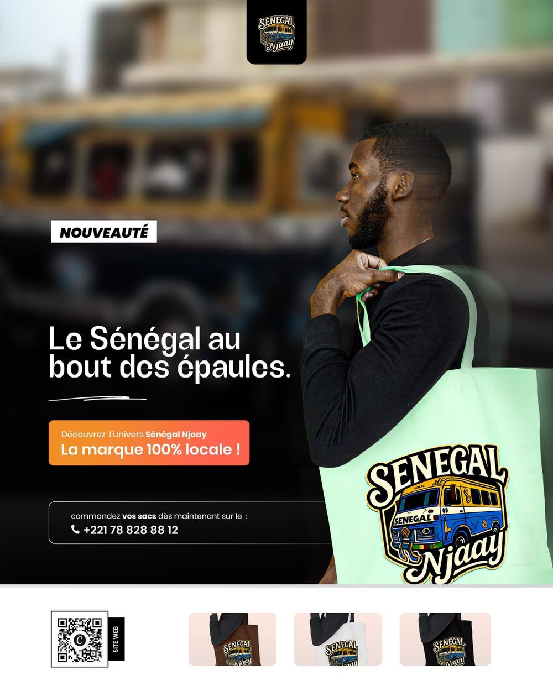

ACCESSOIRE SENEGALNJAAY
Sac en tissu SENEGAL Njaay
5 000 FCFA
Un sac en tissu de type tote bag inspiré de la culture sénégalaise, pensé pour afficher ton attachement au Sénégal au quotidien.
Caractéristiques
- Sac en tissu de type tote bag
- Design inspiré de la culture sénégalaise
- Disponible en plusieurs coloris
Coloris disponibles
Noir, blanc, vert, rouge, bleu marine, rose délavé, gris charbon, bleu-gris délavé, orange, marron...
Commander maintenantLivraison au Sénégal et à l'international. Les envois vers l'étranger sont organisés au cas par cas via des GP.